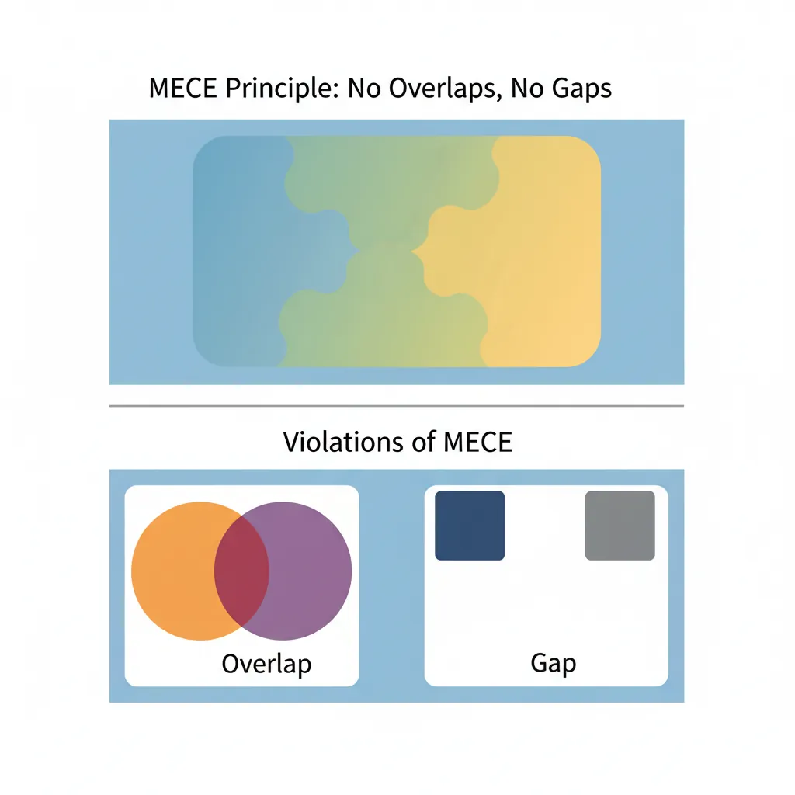
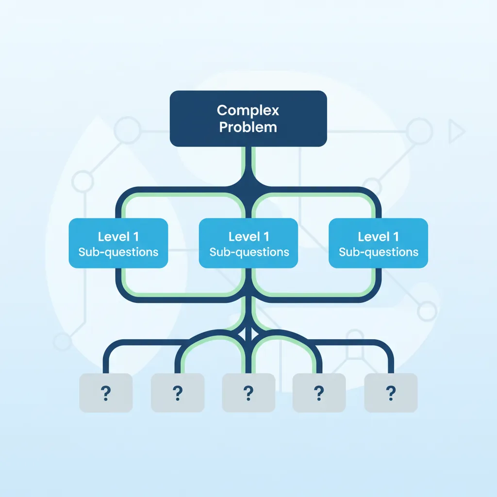
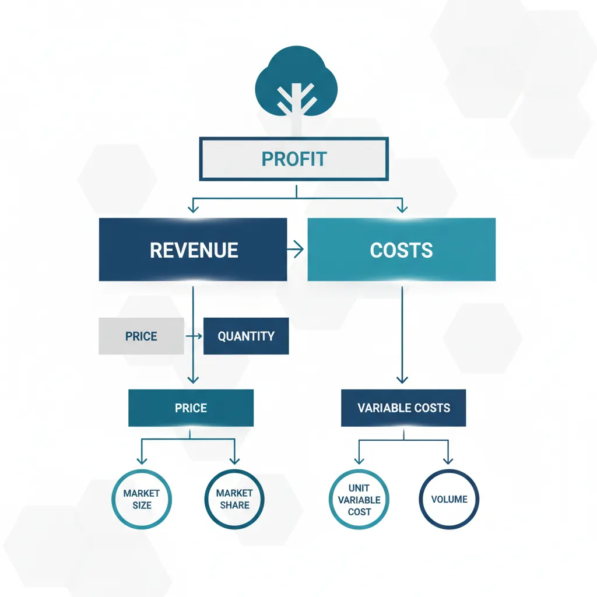
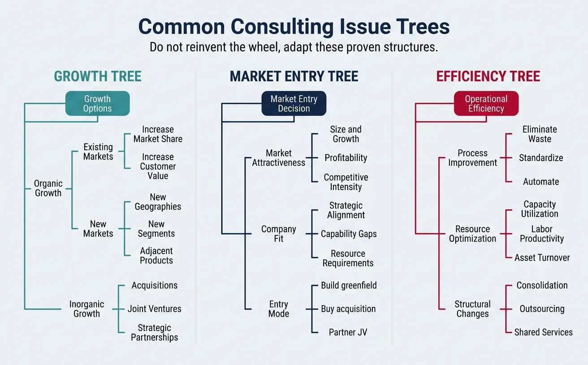
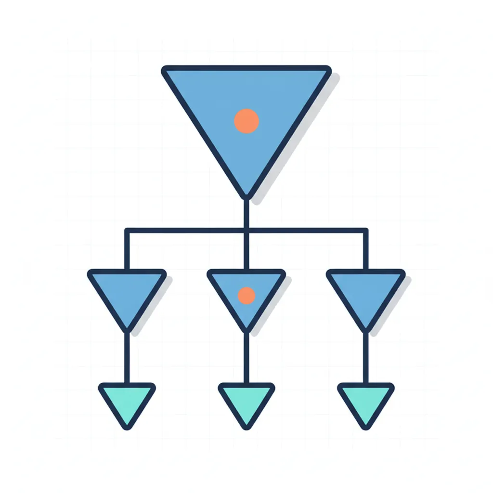

Business Strategy
Structured Problem Solving
Hypothesis-driven thinking, problem structuring, root cause analysisMECE & Issue Trees
Mutually exclusive, collectively exhaustive, logic treesStrategy Frameworks
Porter's Five Forces, SWOT, BCG Matrix, value chainMcKinsey 7S & Organizational Analysis
Structure, strategy, systems, shared values, skillsFinancial Due Diligence
Financial statements, valuation, M&A analysis, modelingClient Communication & Delivery
Pyramid principle, slide design, stakeholder managementAdvanced Frameworks (Bonus)
Blue ocean, disruption theory, scenario planningCase Interview Master Pack (Bonus)
Market sizing, profitability, M&A, pricing casesConsultant Toolkit (Bonus)
Templates, checklists, presentation frameworksKey Insight
MECE is the foundation of all consulting structure. It ensures your analysis has no overlaps and no gaps—making your thinking bulletproof in case interviews and client presentations. Master issue trees, and you can decompose any business problem into actionable components.
1. What MECE Means
MECE (pronounced "me-see") is the foundation of all consulting structure. It stands for Mutually Exclusive, Collectively Exhaustive—a principle that ensures your analysis has no overlaps and no gaps.

graph TD
PROB["Core Problem\n(Why is profitability declining?)"] --> REV["Revenue"]
PROB --> COST["Costs"]
REV --> PRICE["Price"]
REV --> VOL["Volume"]
VOL --> NEW["New\nCustomers"]
VOL --> EXIST["Existing\nCustomers"]
COST --> FIX["Fixed\nCosts"]
COST --> VAR["Variable\nCosts"]
FIX --> RENT["Rent"]
FIX --> SAL["Salaries"]
VAR --> COGS["COGS"]
VAR --> DIST["Distribution"]
Understanding MECE
Mutually Exclusive means each element in your breakdown is distinct—no overlaps. If you're categorizing customers, a customer belongs in one category only, not two.
Collectively Exhaustive means you've covered everything—no gaps. If you're analyzing revenue, you've accounted for 100% of revenue sources.
MECE vs Non-MECE Examples
| Breakdown | MECE? | Problem |
|---|---|---|
| Customer types: B2B, B2C | ✓ MECE | None—covers all, no overlap |
| Customer types: Large, Small, New | ✗ Not ME | "New" overlaps with "Large" and "Small" |
| Revenue: Product, Services | Partial | May miss licensing, subscriptions, etc. |
| Costs: Fixed vs Variable | ✓ MECE | None—by definition exhaustive |
| Age groups: Under 25, 25-50, Over 50 | ✓ MECE | None—complete and non-overlapping |
| Employees: Full-time, Remote, Contractors | ✗ Not ME | "Remote" overlaps with both others |
The Pizza Analogy
Think of MECE like slicing a pizza. Mutually Exclusive: Each slice is separate—no slice overlaps another. Collectively Exhaustive: When you put all slices together, you have the whole pizza—nothing missing. If you have gaps or overlaps, you either have missing pizza or double-counted pizza!
MECE Applications
MECE isn't just for case interviews—it's a universal tool for clear thinking:
| Application | MECE Example |
|---|---|
| Strategy planning | Growth options: Organic vs M&A (covers all growth types) |
| Market segmentation | By geography: North America, EMEA, APAC, LATAM |
| Cost analysis | Cost types: COGS, SG&A, R&D, Other |
| Root cause analysis | 6 Ms: Man, Machine, Material, Method, Measurement, Mother Nature |
| Decision-making | Options: Build, Buy, Partner, Do Nothing |
| Stakeholder mapping | By role: Sponsor, Decision-maker, Influencer, User |
How to Test for MECE
Knowing the definition of MECE is easy—applying it consistently is the hard part. Use this step-by-step checklist whenever you decompose a problem to verify your structure is airtight.
The MECE Validation Checklist
Step 1: Write out your categories. List every branch of your breakdown on paper or a whiteboard.
Step 2: Test for Mutually Exclusive. For each pair of categories, ask: "Can any single item belong to both of these categories at the same time?" If yes, you have an overlap—reorganize.
Step 3: Test for Collectively Exhaustive. Ask: "Is there anything I can think of that doesn't fit into any of these categories?" Try edge cases, unusual scenarios, and "what about...?" questions. If something falls through the cracks, add a category or broaden an existing one.
Step 4: Apply the "100% Test." Imagine you assigned a percentage to each category. Do they add up to 100% of the total? If your revenue breakdown accounts for only 85% of revenue, you're missing 15% somewhere.
Step 5: Stress-test with a colleague. Ask someone to poke holes—can they find an overlap or a gap you missed?
The "Bucket Test" Shortcut
Imagine you have physical buckets labeled with your categories and a pile of items to sort. If every item lands in exactly one bucket and no items are left over, your structure is MECE. This mental model works for customers, costs, revenue sources, root causes—anything you're categorizing.
Worked Example: Fixing a Non-MECE Breakdown
Scenario: A team categorized reasons for employee turnover as:
- Compensation
- Work-life balance
- Remote work policy
- Management quality
- Career growth
Problem: "Remote work policy" overlaps with "Work-life balance" (remote work is a work-life balance factor). Not mutually exclusive.
Fixed (MECE) version:
- Compensation & Benefits — salary, bonuses, perks, equity
- Work Environment — work-life balance, remote policy, office culture, flexibility
- Leadership & Management — manager quality, communication, trust, autonomy
- Growth & Development — career path, learning opportunities, promotions, skill-building
Now each reason fits in exactly one bucket, and together they cover all major turnover drivers.
2. Issue Trees (Problem Decomposition)
An issue tree is a visual representation of MECE thinking applied to a problem. It breaks a complex question into smaller, answerable sub-questions.

Diagnostic Trees
Used to understand why something is happening. Start with a problem and decompose into potential causes. Also known as a problem tree or root cause tree, this is the most common type of issue tree in consulting. Every branch answers the question "Why might this be happening?" and every sub-branch drills deeper into specific causes.
Diagnostic Tree: Why Are Profits Declining?
Why are profits declining?
├── Revenue issue?
│ ├── Price declining?
│ │ ├── Competitive pressure?
│ │ └── Product commoditization?
│ └── Volume declining?
│ ├── Market shrinking?
│ ├── Losing market share?
│ └── Customer churn increasing?
└── Cost issue?
├── COGS increasing?
│ ├── Raw material costs?
│ └── Labor costs?
└── Operating costs increasing?
├── Sales & Marketing?
├── G&A overhead?
└── R&D spending?
How to use: Test each branch with data. If revenue is flat but costs increased, skip the revenue branches entirely—focus your analysis on costs.
Solution Trees
Used to identify what can be done about a problem. Start with a goal and decompose into potential actions.
Solution Tree: How to Increase Profit?
How can we increase profit?
├── Increase revenue
│ ├── Increase price
│ │ ├── Premium positioning
│ │ └── Reduce discounting
│ └── Increase volume
│ ├── Acquire new customers
│ ├── Increase share of wallet
│ └── Enter new markets
└── Decrease costs
├── Reduce COGS
│ ├── Negotiate with suppliers
│ └── Improve operational efficiency
└── Reduce operating costs
├── Consolidate locations
├── Automate processes
└── Renegotiate contracts
graph TD
PROFIT["Profit\n= Revenue - Costs"] --> REV["Revenue\n= Price × Volume"]
PROFIT --> COSTS["Total Costs"]
REV --> PRICE["Price\nper Unit"]
REV --> VOLUME["Units\nSold"]
COSTS --> FIXED["Fixed Costs\n(Rent, Salaries, Depreciation)"]
COSTS --> VARIABLE["Variable Costs\n(Materials, Labor, Shipping)"]
VOLUME --> SEGMENTS["By Segment"]
VOLUME --> CHANNELS["By Channel"]
VOLUME --> GEO["By Geography"]
Decision Trees
Used to make choices by mapping options and outcomes. Useful for "should we...?" questions.
| Tree Type | Starting Question | What It Answers |
|---|---|---|
| Diagnostic | "Why is X happening?" | Root cause identification |
| Solution | "How can we achieve Y?" | Possible actions/initiatives |
| Decision | "Should we do Z?" | Choice between options |
Building Your First Issue Tree: A Step-by-Step Guide
Issue trees look elegant in textbooks, but building one from scratch can feel intimidating. Here's a beginner-friendly, repeatable process you can follow for any business problem.
Step-by-Step: Build an Issue Tree
Step 1: Define the core question clearly. Write a single, specific question at the top. Bad: "Fix the business." Good: "Why has our customer acquisition cost increased 40% in 12 months?"
Step 2: Determine the tree type. Is this a diagnostic question (Why is X happening?), a solution question (How can we achieve Y?), or a decision question (Should we do Z?)? This tells you how to decompose.
Step 3: Create Level 1 branches (2-4 branches). Break the question into its major components. Aim for 2-4 MECE branches. More than 5 at any level usually means you're not grouping effectively.
Step 4: Decompose each branch one more level. For each Level 1 branch, ask "What are the sub-components?" or "What are the possible causes?" Repeat the MECE test at every level.
Step 5: Stop when you reach testable hypotheses. Each leaf node (the end of a branch) should be something you can test with data, interviews, or analysis. If it's still too broad to test, break it down further.
Step 6: Prioritize branches. Not all branches are equally important. Use your judgment, the client's hints, and available data to identify which branches to investigate first. Apply the 80/20 rule from Part 1.
Worked Example: Building a Tree from Scratch
Client question: "Why has our customer acquisition cost (CAC) increased 40% in 12 months?"
Tree type: Diagnostic ("Why is X happening?")
Why has CAC increased 40%?
├── Marketing spend increased? [Cost side]
│ ├── Higher cost per channel?
│ │ ├── Paid search CPC increased?
│ │ ├── Social media ad costs up?
│ │ └── Content/SEO costs increased?
│ └── Spending on more channels?
│ ├── New channels added (TV, podcast)?
│ └── Increased spend on existing channels?
├── Conversion rates declined? [Efficiency side]
│ ├── Lead quality declined?
│ │ ├── Targeting broader audience?
│ │ └── Channel mix shift to lower-quality leads?
│ └── Sales conversion declined?
│ ├── Sales team changes?
│ └── Product-market fit weakening?
└── Customer definition changed? [Measurement side]
├── Counting different customer types?
└── Attribution model changed?
MECE check: The three Level 1 branches (spend, efficiency, measurement) are mutually exclusive and cover all possible reasons for CAC increase. Each sub-branch is also MECE within its parent.
Next step: Prioritize. The client mentioned "our ads feel less effective," so start with the Conversion Rates branch. Request data on lead quality and conversion rates over the last 12 months.
Quick Tips for Better Issue Trees
- Start wide, then narrow: It's easier to split a broad branch than to realize you missed an entire area
- Use math to check: Revenue = Price × Volume is inherently MECE. Mathematical identities are your friend
- Limit depth: 3-4 levels is usually sufficient. Going deeper often means you should start analyzing, not structuring
- Label branches clearly: Each branch should be a clear, specific statement—not vague buckets like "Other" or "Miscellaneous"
- Draw it out: Use pen and paper first. Digital tools come later. Speed matters in case interviews
3. The Profit Tree
The Profit Tree is the most commonly used consulting framework—the basis for nearly every profitability case. Memorize this structure; you'll use it constantly.

The Fundamental Equation
Profit = Revenue − Costs
Every profitability problem breaks down into this equation. Your job is to identify which side of the equation is driving the issue.
Revenue Breakdown
Revenue can be decomposed in multiple MECE ways. Choose the breakdown that best fits your problem:
| Breakdown Method | Formula | Best For |
|---|---|---|
| Price × Volume | Revenue = Price × Units Sold | Simple product businesses |
| Customer-based | Revenue = # Customers × Revenue per Customer | Subscription/recurring businesses |
| Market × Share | Revenue = Market Size × Market Share × Price | Competitive analysis |
| Channel-based | Revenue = Direct + Retail + Online + Other | Multi-channel businesses |
| Product-based | Revenue = Product A + Product B + Product C | Portfolio analysis |
flowchart TD
R[Revenue] --> V[Volume — Units Sold]
R --> P[Price — per Unit]
V --> NC[New Customers]
V --> EC[Existing Customers]
NC --> MG[Marketing-Generated Leads]
NC --> SG[Sales-Generated Leads]
EC --> RP[Repeat Purchases]
EC --> UC[Upsell / Cross-Sell]
P --> LP[List Price]
P --> EP[Effective Price — After Discounts]
EP --> VD[Volume Discounts]
EP --> PD[Promotional Discounts]
EP --> CN[Contract Negotiations]
Complete Revenue Tree Example
Revenue
├── Volume (Units Sold)
│ ├── New customers
│ │ ├── Marketing-generated leads
│ │ └── Sales-generated leads
│ └── Existing customers
│ ├── Repeat purchases
│ └── Upsell/cross-sell
└── Price (per Unit)
├── List price
└── Effective price (after discounts)
├── Volume discounts
├── Promotional discounts
└── Contract negotiations
Cost Breakdown
Costs can be broken down in multiple MECE ways:
| Breakdown | Components | Best For |
|---|---|---|
| Fixed vs Variable | Costs that change with volume vs those that don't | Break-even analysis, pricing decisions |
| Direct vs Indirect | Tied to specific products vs shared overhead | Product profitability analysis |
| Income Statement | COGS, SG&A, R&D, D&A, Interest | Financial analysis |
| Value Chain | Procurement, Production, Distribution, Sales, Support | Operational efficiency |
Complete Cost Tree (Income Statement View)
Costs
├── COGS (Cost of Goods Sold)
│ ├── Direct materials
│ ├── Direct labor
│ └── Manufacturing overhead
├── Operating Expenses (OpEx)
│ ├── Sales & Marketing
│ │ ├── Sales compensation
│ │ ├── Marketing spend
│ │ └── Customer acquisition
│ ├── General & Administrative
│ │ ├── Management salaries
│ │ ├── Rent & facilities
│ │ └── Professional services
│ └── Research & Development
│ ├── Engineering salaries
│ └── Product development
└── Non-Operating
├── Interest expense
└── Depreciation & Amortization
4. Common Consulting Trees
Beyond profit, consultants have standard trees for common business problems. Don't reinvent the wheel—adapt these proven structures.

Growth Tree
For "How can we grow?" questions:
Growth Options
├── Organic Growth
│ ├── Existing markets
│ │ ├── Increase market share
│ │ └── Increase customer value
│ └── New markets
│ ├── New geographies
│ ├── New customer segments
│ └── Adjacent products
└── Inorganic Growth
├── Acquisitions
├── Joint ventures
└── Strategic partnerships
Market Entry Tree
For "Should we enter market X?" questions:
Market Entry Decision
├── Market Attractiveness
│ ├── Market size & growth
│ ├── Profitability (margins)
│ └── Competitive intensity
├── Company Fit
│ ├── Strategic alignment
│ ├── Capability gaps
│ └── Resource requirements
└── Entry Mode
├── Build (greenfield)
├── Buy (acquisition)
└── Partner (JV/alliance)
flowchart TD
PI["Pricing Issue:
Should We Change Our Price?"] --> VC["Value to Customer"]
PI --> CS["Cost Structure"]
PI --> CL["Competitive Landscape"]
VC --> WTP["Willingness to Pay"]
VC --> PS["Price Sensitivity"]
VC --> PV["Perceived Value vs. Alternatives"]
CS --> FC["Fixed Costs"]
CS --> VCC["Variable Costs per Unit"]
CS --> TM["Target Margin"]
CL --> CP["Competitor Pricing"]
CL --> MS["Market Share Impact"]
CL --> PR["Price War Risk"]
Operational Efficiency Tree
For "How can we operate more efficiently?" questions:
Operational Efficiency
├── Process improvement
│ ├── Eliminate waste
│ ├── Standardize processes
│ └── Automate tasks
├── Resource optimization
│ ├── Capacity utilization
│ ├── Labor productivity
│ └── Asset turnover
└── Structural changes
├── Consolidation
├── Outsourcing
└── Shared services
Customer Churn Tree
For "Why are customers leaving?" questions:
Why Are Customers Churning?
├── Product/Service issues
│ ├── Quality problems
│ ├── Features gaps vs competitors
│ └── Reliability/uptime
├── Customer experience issues
│ ├── Support quality
│ ├── Onboarding friction
│ └── Billing/admin problems
├── Value perception
│ ├── Price vs perceived value
│ ├── ROI not realized
│ └── Better alternatives available
└── External factors
├── Customer business changes
├── M&A/consolidation
└── Budget cuts
Driver Tree (KPI Decomposition)
A driver tree decomposes a business metric into its mathematical components, making each driver independently measurable and actionable. Unlike diagnostic trees (which ask "why?") or solution trees (which ask "how?"), driver trees answer "what drives this number?" by following the arithmetic relationships between KPIs.
Driver Tree: Revenue per Customer
Revenue per Customer (= AOV × Purchase Frequency)
├── Average Order Value (AOV)
│ ├── Units per order
│ │ ├── Cross-sell rate
│ │ └── Bundle attach rate
│ └── Price per unit
│ ├── List price
│ ├── Discount rate
│ └── Mix shift (premium vs economy)
└── Purchase Frequency (orders/year)
├── Repeat purchase rate
├── Time between purchases
└── Seasonal patterns
Driver Tree: Customer Acquisition Cost (CAC)
CAC (= Total Acquisition Spend ÷ New Customers)
├── Total Acquisition Spend
│ ├── Marketing spend
│ │ ├── Paid channels (SEM, social ads, display)
│ │ ├── Content & SEO investment
│ │ └── Events & sponsorships
│ └── Sales spend
│ ├── SDR/BDR team costs
│ ├── Sales tools & tech stack
│ └── Commission & incentives
└── New Customers Acquired
├── Lead volume
│ ├── Website traffic × conversion rate
│ └── Outbound outreach × response rate
└── Lead-to-customer conversion rate
├── Demo/trial booking rate
└── Close rate
When to use driver trees: Whenever the executive question is about improving a business metric — revenue growth, margin expansion, conversion rate, NPS score — decompose it into its arithmetic drivers first. This immediately focuses the analysis on which levers have the highest impact.
Customer Value Tree
A customer value tree decomposes how a company creates and captures value from its customers. It's essential for growth strategy, pricing decisions, and understanding why customers buy (or leave). There are two complementary perspectives:
Customer Value Tree: Growth vs Cost Perspective
Customer Lifetime Value (CLV)
├── Value Creation (Growth Levers)
│ ├── Acquisition value
│ │ ├── New customer volume
│ │ └── Average first-purchase value
│ ├── Retention value
│ │ ├── Retention rate (1 − churn)
│ │ ├── Average customer lifespan
│ │ └── Loyalty program uplift
│ └── Expansion value
│ ├── Upsell revenue (higher tier)
│ ├── Cross-sell revenue (adjacent products)
│ └── Referral value (new customers brought)
└── Value Cost (Cost Levers)
├── Acquisition costs (CAC)
│ ├── Marketing cost per lead
│ └── Sales cost per conversion
├── Serving costs
│ ├── COGS per customer
│ ├── Support cost per ticket
│ └── Infrastructure cost per user
└── Retention costs
├── Loyalty/rewards program cost
├── Renewal incentives
└── Win-back campaign cost
Customer Value Tree: Value Proposition Perspective
Customer Perceived Value
├── Functional value
│ ├── Core product performance
│ ├── Reliability & quality
│ └── Feature completeness vs alternatives
├── Economic value
│ ├── Total cost of ownership (TCO)
│ ├── Time savings
│ └── ROI / payback period
├── Emotional value
│ ├── Brand trust & reputation
│ ├── User experience & delight
│ └── Peace of mind / risk reduction
└── Social value
├── Status & prestige
├── Community & belonging
└── Alignment with personal values
Quick MECE Breakdown Reference
Experienced consultants have a mental library of proven MECE breakdowns they can deploy instantly. Here are the most common ones, organized by category. Memorize these—they'll save you time in case interviews and client work.
Universal MECE Breakdowns
| Category | MECE Breakdown | Why It Works |
|---|---|---|
| Time | Past, Present, Future | Covers all time periods by definition |
| Stakeholders | Internal vs External | Every stakeholder is one or the other |
| Geography | Domestic vs International | Covers all markets, no overlap |
| Growth | Organic vs Inorganic | Mutually exclusive growth types |
| Costs | Fixed vs Variable | Every cost is one or the other by definition |
| Customers | New vs Existing | Clean split, drives different strategies |
| Impact | Short-term vs Long-term | Covers all time horizons |
| Supply & Demand | Supply-side vs Demand-side | Fundamental economic split |
| Control | Controllable vs Uncontrollable | Separates what you can act on from what you can't |
| Quantitative vs Qualitative | Numbers-based vs Judgment-based | Covers all types of analysis |
The "Mathematical MECE" Trick
The easiest way to guarantee MECE is to use mathematical identities. These are MECE by definition because they're equations:
- Profit = Revenue − Costs (covers all of profitability)
- Revenue = Price × Volume (covers all of revenue)
- Revenue = # Customers × Revenue/Customer (alternative revenue split)
- Market Share = Our Sales / Total Market Sales (share decomposition)
- ROI = (Gain − Cost) / Cost (investment analysis)
When in doubt, look for a formula. Formulas are always MECE.
5. Structuring Like McKinsey
McKinsey consultants are famous for their structured thinking. Here's how they approach problems.

Top-Down Logic
Start with the answer (or hypothesis), then provide supporting reasons. This is the opposite of how most people naturally communicate.
| Approach | Flow | Example |
|---|---|---|
| Bottom-Up (Natural) | Background → Analysis → Conclusion | "We analyzed data, interviewed stakeholders, and reviewed benchmarks. Based on this, we conclude..." |
| Top-Down (Consulting) | Conclusion → Supporting Points → Evidence | "You should enter the market. Here are three reasons: (1)..., (2)..., (3)..." |
The "Newspaper Test"
If an executive only reads your first sentence, would they understand your main point? If not, restructure. Executives are busy—lead with the answer.
Pyramid Principle
Developed by Barbara Minto at McKinsey, the Pyramid Principle structures all communication as an inverted pyramid:
flowchart TD
M["Main Message
What you need to do"] --> P1["Point 1
Reason"]
M --> P2["Point 2
Reason"]
M --> P3["Point 3
Reason"]
P1 --> E1A["Evidence A"]
P1 --> E1B["Evidence B"]
P2 --> E2A["Evidence C"]
P2 --> E2B["Evidence D"]
P3 --> E3A["Evidence E"]
P3 --> E3B["Evidence F"]
Pyramid Structure
┌─────────────────────────┐
│ MAIN MESSAGE (1) │
│ "What you need to do" │
└─────────────────────────┘
│
┌─────────────┼─────────────┐
▼ ▼ ▼
┌──────────┐ ┌──────────┐ ┌──────────┐
│ Point 1 │ │ Point 2 │ │ Point 3 │
│ (Reason) │ │ (Reason) │ │ (Reason) │
└──────────┘ └──────────┘ └──────────┘
│ │ │
▼ ▼ ▼
┌──────────┐ ┌──────────┐ ┌──────────┐
│Evidence A│ │Evidence B│ │Evidence C│
│Evidence B│ │Evidence C│ │Evidence D│
└──────────┘ └──────────┘ └──────────┘
Key rules of the Pyramid:
- One main message at the top (the "governing thought")
- 3-5 supporting points that are MECE
- Evidence below each point (data, examples, analysis)
- Logical flow: Points should answer "why?" or "how?" of the level above
Storyline-First Thinking
Before doing any analysis, consultants create a storyline—the logical flow of the final presentation. This ensures analysis is focused on supporting the narrative, not exploring tangents.
| Step | Action | Output |
|---|---|---|
| 1 | Define the question | "Should we enter the German market?" |
| 2 | Form Day-1 hypothesis | "Yes, through acquisition of a local player" |
| 3 | Draft storyline | Key messages that support/refute hypothesis |
| 4 | Identify analyses needed | What data proves/disproves each message? |
| 5 | Do targeted analysis | Only work that supports the storyline |
| 6 | Refine storyline | Update based on findings |
6. Avoiding Framework Overuse
Frameworks are powerful—but they can become crutches. Here's how to avoid common traps.
Customize Structures
Cookie-cutter frameworks signal inexperience. Adapt standard structures to your specific problem.
| Don't Say | Do Say |
|---|---|
| "Let me use the 3 Cs: Company, Competitors, Customers" | "I'll structure this as: (1) Our capabilities gap, (2) Competitive pressure from X, (3) Customer needs shift" |
| "Profit = Revenue − Costs, so let me look at both" | "Since you mentioned costs have been flat, I'll focus on the revenue side—specifically, price erosion in enterprise" |
Problem-Driven Approach
Start with the problem, not the framework. Ask: "What framework fits this problem?" not "How can I apply my favorite framework?"
Framework Traps to Avoid
- Framework shopping: Trying multiple frameworks until one "fits"
- Completeness theater: Covering all boxes even when irrelevant
- Analysis paralysis: Over-structuring simple problems
- Framework worship: Treating frameworks as answers, not tools
7. Conclusion & Next Steps
You've mastered the foundational structuring tools of consulting:
- MECE thinking ensures complete, non-overlapping analysis
- Issue trees decompose complex problems into manageable pieces
- Profit trees structure any profitability question
- Top-down logic and the Pyramid Principle organize communication
- Customization prevents framework overuse
Practice Exercise
Build issue trees for these common consulting problems:
- "Why has market share declined 5 points in 2 years?"
- "How can we reduce customer acquisition cost by 30%?"
- "Should we launch a premium product tier?"
Check: Are your trees MECE? Do they lead to actionable, testable sub-questions?
Practice Answer: Market Share Decline
Here's one way to structure Problem #1. Compare yours and see if you covered the same ground:
Why has market share declined 5 points in 2 years?
├── We lost customers [Demand-side]
│ ├── Customer satisfaction declined?
│ │ ├── Product quality issues?
│ │ ├── Service/support deteriorated?
│ │ └── Price increases drove customers away?
│ └── Customers switched to alternatives?
│ ├── Competitor launched better product?
│ ├── New market entrant disrupted?
│ └── Substitute product emerged?
├── We failed to capture market growth [Growth-side]
│ ├── Market grew but we didn't keep pace?
│ │ ├── Underinvested in marketing?
│ │ ├── Capacity constraints?
│ │ └── Distribution gaps?
│ └── New segments emerged that we missed?
│ ├── Demographic shifts?
│ └── Channel shifts (e.g., to online)?
└── Measurement/definition changed [Data-side]
├── Market definition expanded?
└── Data collection methodology changed?
MECE check: Three Level 1 branches—lost existing share, missed growth, or measurement artifact—are mutually exclusive and collectively exhaustive. Every possible reason for share decline fits into one of these buckets.
Key learning: Notice the "Measurement" branch. Beginners often forget this, but experienced consultants always check whether the data itself might explain the trend before diving into business analysis. Sometimes "declining share" is just a wider market definition.